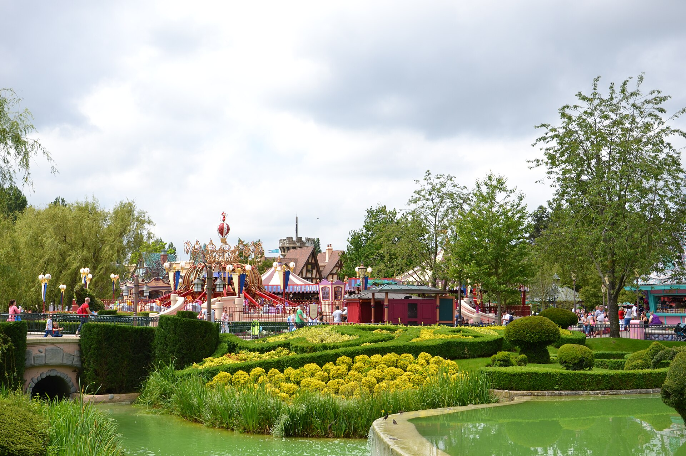

Francia · Viaggio di gruppo
Castelli & Disney
Dall’Alsazia a Parigi, tra castelli e meraviglia.
Il programma del viaggio
- 4–6 GEN
Alsazia: Colmar, Riquewihr e Haut-Kœnigsbourg
Volo Milano–Strasburgo. Soggiorno presso Hotel & Spa Ribeauvillé dal 4 al 6 gennaio, in zona Ribeauvillé. Tour di Colmar, visita del villaggio di Riquewihr e del castello di Haut-Kœnigsbourg con trasporto. Ordine delle escursioni da definire.
- 6 GEN
Da Colmar a Parigi
Trasferimento in treno Colmar–Parigi. Sistemazione all’ibis Paris Porte d’Italie dal 6 al 9 gennaio.
- 6–9 GEN
Parigi: Île de la Cité e il cuore storico
Tour guidato dell’Île de la Cité, visita all’interno della cattedrale di Notre-Dame, Sainte-Chapelle e Conciergerie. Passeggiata lungo le rive della Senna. Calendario delle visite da definire.
- ALTRE TAPPE
Chambord e Disneyland Paris
Château de Chambord: visita richiesta, con biglietti e trasferimento da confermare; il castello si trova nella Valle della Loira. Giornata e ingresso a Disneyland Paris ancora da definire.
Programma in preparazione.
La richiesta non conferma una prenotazione.
Entra nel gruppo del viaggio ↗
Informazioni sulla proposta e crediti fotografici
Viaggio previsto dal 4 al 9 gennaio 2027. Le tappe sono riportate per periodo: l’ordine delle escursioni, i servizi inclusi, l’organizzatore e le condizioni saranno precisati prima di qualsiasi conferma. L’hotel in Alsazia e la tappa di Chambord devono essere confermati. La giornata e il biglietto di Disneyland Paris sono ancora da definire. Le fotografie sono illustrative.
Fotografia dei giardini di Fantasyland (2016): Andrei Dan Suciu · Wikimedia Commons, CC BY 3.0. Immagine ridimensionata; la grafica scaricabile aggiunge impaginazione e testi. La fotografia illustra la destinazione e non rappresenta servizi inclusi. Questa pagina presenta una proposta indipendente del team: non è materiale ufficiale Disney e non dichiara un’affiliazione con Disneyland Paris.